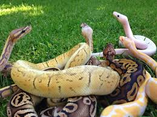
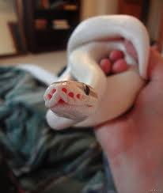

Змеи
населяют заросшие поля, лесные поляны, деревья и брошенные или редко используемые здания и фермы. Как правило, полозы обитают на земле,
но могут подниматься на деревья, скалы и другие возвышенности.Рацион состоит преимущественно из грызунов, в основном мышей и крыс, однако на деревьях
змеи
могут ловить птиц и летучих мышей.Для взрослых особей характерным является полудревесный образ жизни.

Королевский питон один из самых мелких
питонов
, достигает в длину 1,2—1,5 м.
Тело толстое, мощное с коротким хвостом. Большая широкая голова хорошо отграничена от шеи.
Рисунок на теле состоит из чередующихся неправильных светло-коричневых и темно-коричневых или почти черных пятен и полос,
в некоторых местах разделенных светлой окантовкой.Брюхо белого или кремового цвета, иногда с разбросанными небольшими темными пятнышками.

Сетчатый питон
[1] (лат. Python reticulatus) — неядовитая
змея
из семейства
, обитающая в Название «сетчатый» получил из-за сложного узора на теле,
включающего цепочку светлых ромбовидных пятен посередине спины и треугольные, соединённые между собой тёмные пятна со светлыми центрами по бокам.
Голова светлая. Чешуя с сильным радужным Несмотря на наличие большого количества данных о гигантских сетчатых
питон
,подобного рода истории не являются достоверными.
Известный шведский натуралист Ральф Бломберг в своей книге «
Змеи
-гиганты и страшные ящеры» упоминает экземпляр длиной 33 фута, то есть около 10 метров.
Но непонятно, на каких наблюдениях базируются эти данные[2]. Сетчатый питон с Филиппин длиной 14,085 м и весом 447 кг, о котором сообщалось в СМИ,
на самом деле оказался более чем в два раза меньше[3].Тем не менее, сетчатый питон является самой длинной змеёй мировой фауны.
Самые крупные особи номинативного подвида в дикой природе могут вырастать по меньшей мере до 7 метров в длину.
Более тысячи диких сетчатых питонов были измерены на юге Суматры, в длину они были от 1,15 до 6,05 м при весе от 1 до 75 кг[4].
На Флоресе регулярно наблюдают
змей
длиной более 4—5 метров[5]. Одной из крупнейших измеренных особей была змея из Индонезии, она достигала 6,95 м и весила 59 кг,
но при этом не ела 3 месяца[6]. Сетчатые питоны, обитающие на небольших островах, значительно меньше своих материковых сородичей и питонов с более крупных островов.
Достоверно самый крупный сетчатый питон, содержавшийся в неволе — самка длиной около 7,5 м по кличке «Саманта», пойманная на Борнео и умершая в 2002 в Зоопарке Бронкса (Нью-Йорк).А сейчас хочешь змейку?!?